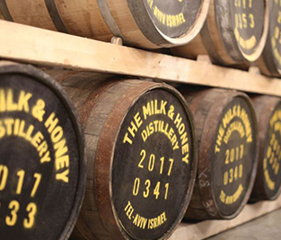
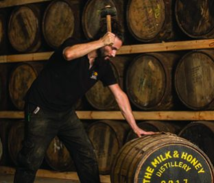
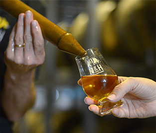

-
How a whisky revolution is happening in Israel
07.09.2019
INDEPENDENT
It is not just how the distillery uses its unusual geography that sets it apart, it is the youthful exuberance and curiosity.
READ MORE
-
Top Non-American Whiskies Of The Year
26.12.2018
FORBES
The first Israeli single malt whiskey, produced by the perfectly named Milk & Honey in Tel Aviv, is a winner.
READ MORE
-
CNN TRAVEL’S 19 PLACES TO VISIT IN 2019
08.01.2019
CNN Travel
 Jaffa is home to the first whisky distillery in all of Israel, the aptly named Milk & Honey. And before you have to ask -- yes, it's kosher.
Jaffa is home to the first whisky distillery in all of Israel, the aptly named Milk & Honey. And before you have to ask -- yes, it's kosher.
READ MORE
-
Milk & Honey Distillery: A taste of Tel Aviv
23.07.2019
MASTER of MALT
 Tel Aviv’s Milk & Honey Distillery is taking conventional whisky-making and turning it on its head in pursuit of bold flavour and a focus on locality.
READ MORE
Tel Aviv’s Milk & Honey Distillery is taking conventional whisky-making and turning it on its head in pursuit of bold flavour and a focus on locality.
READ MORE
-
NEW LINE OF SINGLE MALT WHISKY
19.02.2019
TastingTable
Gone are the days when single malt whiskies could only be synonymous with Scotland or Japan
READ MORE
-
ISRAEL’S FIRST SINGLE MALT WHISKY
05.03.2019
Master Of Malt
We talk extreme climate ageing, Israeli terroir and Jim Swan’s influence on world whisky with the team at Milk & Honey (or M&H to its friends).
READ MORE
-
SUN, SEA, SAND AND...SCOTCH?
01.01.2019
EasyJet Traveler

Israel has been quietly engeneering a whisky revolution over the past three years and it’s first single malts are just coming of age.
READ MORE
-
ISRAEL: THE LAND OF MILK, HONEY AND WHISKY
12.12.2018
SCOTCHWHISKY
Israel's burgeoning whisky scene presents an unexplored realm of flavours.
READ MORE
-
THE LESSER KNOWN WHISKY PRODUCING COUNTRIES
16.01.2019
THE MANUAL
Perhaps what will help Israel more than some other world whisky countries will be its dynamic geography in the small country.
READ MORE
-
MINI-BOOM OF WHISKY DISTILLERIES IN ISRAEL
26.11.2018
Forbes

10 distilleries where you Can buy An entire cask Of Whisky. I actually had a chance to try its new make spirit, and it was delicious.
READ MORE
-
MILK AND HONEY: NECTAR FROM HEAVEN
26.03.2018
Wizards of Whisky

I've been to Whisky Live Israel twice, and visited Milk & Honey just as it was starting to produce spirit.
READ MORE
-
GREAT ESCAPES: JERUSALEM & TEL AVIV
30.11.2018
BARRON'S
A good night starts with a tasting at Tel Aviv’s single malt whisky distillery.
READ MORE
-
OUR FAVORITE ONE-OF-A-KIND EXPERIENTIAL GIFTS
ICONICLIFE
Forget about Scottish and Japanese distilleries for a moment. Instead, consider Milk & Honey, Israel’s first-ever whisky distillery.
READ MORE
-
THE LAND OF MILK AND HONEY AND NOW WHISKY?
11.08.2017
DailyMail
The country's first whiskey distillery is preparing to release Israel's first single malt whiskey.
READ MORE
-
M&H SETS ISRAELI WHISKY ON THE MAP
THE MANUAL
The audience wants a better story, whisky coming from different places, using different sources, climates, and environments of aging
READ MORE
-
FIRST TIME ISRAELI MADE WHISKY LAUNCH
PURSUIT
Their “Triple Cask” – a combination of ex-red wine, ex-bourbon and ex-Islay barreled whisky – recently won...
READ MORE
-
FIRST ISRAELI WHISKY LAUNCHED
30.05.2017
drinksint International
Israeli distillery Milk & Honey will put 391 bottles of Israel’s first single malt whisky on sale in June.
READ MORE
-
THE HOLY LAND'S FIRST SINGLE MALT WHISKY
30.03.2016
CNN Money
As global demand for whisky booms, one small Israeli distillery is getting into the game as the only place in the Holy Land to produce a single malt.
READ MORE